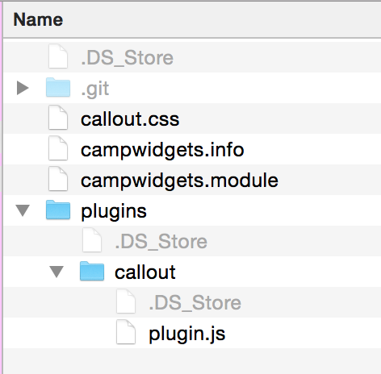

#drupalcorn
Widgetizing WYSIWYG /
Brandon Neil
Widgets are special rich content units in that they are groups of elements which are treated as a single entity inside the editor.
https://drupal.org/project/wysiwyg
Dev version
name = Camp Widgets
description = Adds widgets to CKEditor
core = 7.x
dependencies[] = wysiwygplugins/callout/plugin.js

16x16px and 32x32px for hidpi
hook_ckeditor_settings_alter() or hook_wysiwyg_editor_settings_alter()
Let's add to our hook implementation from earlierAdd to stylesheets in campwidgets.info
name = Camp Widgets
description = Adds widgets to CKEditor
core = 7.x
dependencies[] = wysiwyg
stylesheets[all][] = callout.css
CKEDITOR.plugins.add('callout', {
requires: 'widget',
icons: 'callout',
init: function( editor ) {
editor.widgets.add( 'callout', {
button: 'Create a simple callout',
template:
'' +
'Callout!
' +
'',
editables: {
content: {
selector: '.callout-content',
allowedContent: 'p br ul ol li strong em'
}
},
allowedContent: 'div(!callout); div(!callout-content);',
// Required content for the widget to function. If editor does not
// support this, the button does not function.
requiredContent: 'div(callout)',
upcast: function( element ) {
return element.name == 'div' && element.hasClass( 'callout' );
},
});
}
});
Creating a dialog for our widget
CKEDITOR.plugins.add('callout', {
//Existing code...
init: function( editor ) {
editor.widgets.add( 'callout', {
// Existing code...
// Associate the callout dialog with this widget.
dialog: 'callout',
});
// Register the dialog and its path.
CKEDITOR.dialog.add( 'callout', this.path + 'dialogs/callout.js' );
}
});
@media all and (min-width: 600px) {
.callout.align-right {
float: right;
}
.callout.align-left {
float: left;
}
}
.callout.align-center {
margin-left: auto;
margin-right: auto;
}
We don't want our new properties filtered out
editor.widgets.add( 'callout', {
// Code before...
// ACF allowed content.
allowedContent: 'div(!callout,align-left,align-right,align-center){width});'+
'div(!callout-content);',
// Code after...
});
editor.widgets.add( 'callout', {
// Code before...
init: function() {
var width = this.element.getStyle( 'width' );
if ( width )
this.setData( 'width', width );
if ( this.element.hasClass( 'align-left' ) )
this.setData( 'align', 'left' );
if ( this.element.hasClass( 'align-right' ) )
this.setData( 'align', 'right' );
if ( this.element.hasClass( 'align-center' ) )
this.setData( 'align', 'center' );
}
});
editor.widgets.add( 'callout', {
// Code before...
data: function() {
if ( this.data.width == '' )
this.element.removeStyle( 'width' );
else
this.element.setStyle( 'width', this.data.width );
this.element.removeClass( 'align-left' );
this.element.removeClass( 'align-right' );
this.element.removeClass( 'align-center' );
if ( this.data.align )
this.element.addClass( 'align-' + this.data.align );
}
});
CKEDITOR.plugins.add('callout', {
// CKEditor plugin dependencies.
requires: 'widget',
// Icon file name. callout.png.
icons: 'callout',
// Plugin initialization method.
init: function( editor ) {
// Register our callout widget.
editor.widgets.add( 'callout', {
// Button text on hover state.
button: 'Create a simple callout',
// The widget template.
template:
'' +
'Callout!
' +
'',
// Widget editable areas.
editables: {
content: {
selector: '.callout-content',
allowedContent: 'p br ul ol li strong em'
}
},
// ACF allowed content.
allowedContent: 'div(!callout,align-left,align-right,align-center){width});'+
'div(!callout-content);',
// Required content for the widget to function. If editor does not
// support this, the button does not function.
requiredContent: 'div(callout)',
// Function to determin if an element is a widget.
upcast: function( element ) {
return element.name == 'div' && element.hasClass( 'callout' );
},
dialog: 'callout',
init: function() {
var width = this.element.getStyle( 'width' );
if ( width )
this.setData( 'width', width );
if ( this.element.hasClass( 'align-left' ) )
this.setData( 'align', 'left' );
if ( this.element.hasClass( 'align-right' ) )
this.setData( 'align', 'right' );
if ( this.element.hasClass( 'align-center' ) )
this.setData( 'align', 'center' );
},
data: function() {
if ( this.data.width == '' )
this.element.removeStyle( 'width' );
else
this.element.setStyle( 'width', this.data.width );
this.element.removeClass( 'align-left' );
this.element.removeClass( 'align-right' );
this.element.removeClass( 'align-center' );
if ( this.data.align )
this.element.addClass( 'align-' + this.data.align );
}
});
CKEDITOR.dialog.add( 'callout', this.path + 'dialogs/callout.js' );
}
});
Widget-based styles
Creation of widget-only style options in the "Styles" dropdown
.primary {;
font-size: 1.2em;
line-height: 1.3em;
font-weight: 400;
background-color: #F2F2F2;
border: none;
border-top: 1px solid #DFDFDF;
border-bottom: 1px solid #DFDFDF;
}
.callout.fancy {
padding: 8px;
margin: 10px;
background: #eee;
border-radius: 8px;
border: 1px solid #ddd;
box-shadow: 0 1px 1px #fff inset, 0 -1px 0px #ccc inset;
max-width: 100%;
min-width: 200px;
}
.fancy .callout-content {
box-shadow: 0 1px 1px #ddd inset;
border: 1px solid #cccccc;
border-radius: 5px;
background: #fff;
padding: 8px;
}
/**
* Implements hook_wysiwyg_editor_settings_alter().
*/
function campwidgets_wysiwyg_editor_settings_alter(&$settings, $context) {
// Check if the editor is CKEditor.
if ($context['profile']->editor == 'ckeditor') {
$settings['layoutmanager_loadbootstrap'] = TRUE;
// Get module path.
$module_location = $GLOBALS['base_path'] . drupal_get_path('module', 'campwidgets');
// Include custom css files.
$settings['contentsCss'][] = $module_location . '/callout.css';
// Define fancy style set.
$style_fancy = array(
'name' => 'Fancy',
'type' => 'widget',
'widget' => 'callout',
'attributes' => array(
'class' => 'fancy'
)
);
// Define primary style set.
$style_primary = array(
'name' => 'Primary',
'type' => 'widget',
'widget' => 'callout',
'attributes' => array(
'class' => 'primary'
)
);
$settings['stylesSet'][] = $style_fancy;
$settings['stylesSet'][] = $style_primary;
}
}